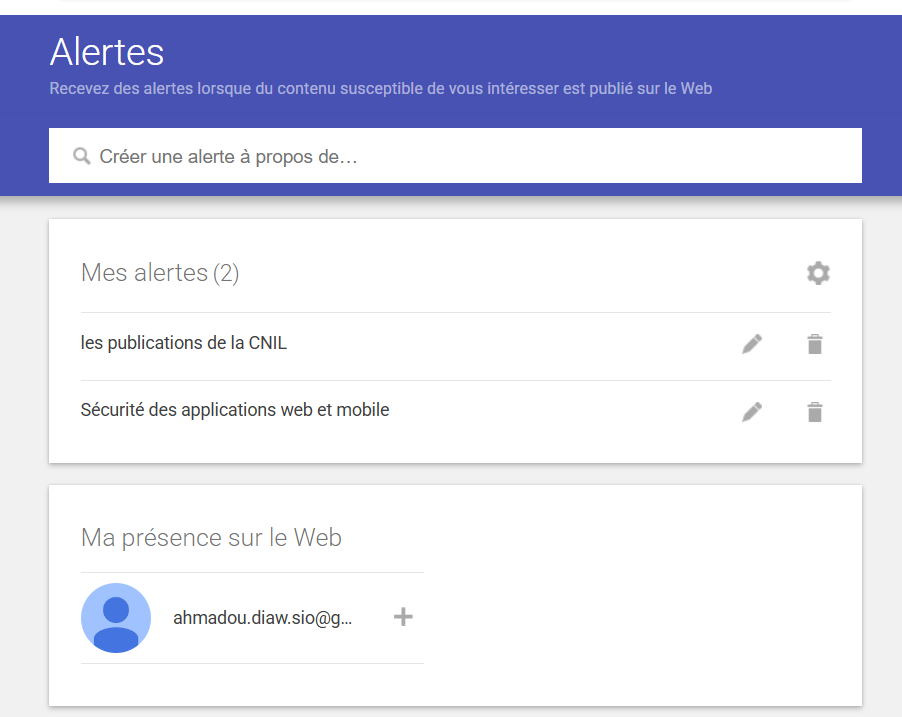
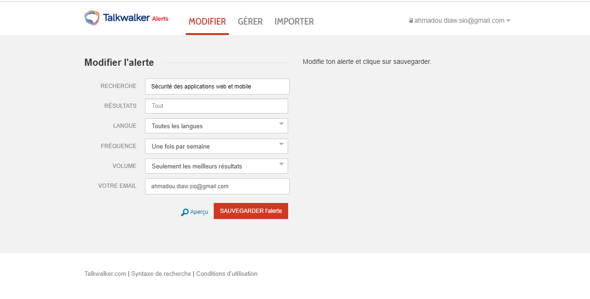

Mise en place de ma veille
Captures d'écran de mon environnement de veille technologique



×
❮
 ❯
❯
En parallèle, j’ai également suivi une veille régulière sur les publications de la CNIL (Commission Nationale de l’Informatique et des Libertés). Cette veille m’a permis de mieux comprendre les implications juridiques et les obligations en matière de traitement de données personnelles.
Grâce à cette approche, je suis en mesure d’identifier les exigences de conformité dans un projet (transparence, minimisation, durée de conservation, etc.) et d’intégrer les recommandations officielles de la CNIL dans mes choix techniques ou documentaires.
Cette double veille (technique et réglementaire) me permet aujourd’hui d’adopter une approche complète, responsable et sécurisée dans mes projets web et mobiles.
Captures d'écran de mon environnement de veille technologique
Je me tiens informé via les sources officielles pour rester à jour sur les recommandations et décisions de la CNIL :
À chaque nouvelle publication, je prends le temps d’analyser :
Je rédige une synthèse claire et structurée dans Microsoft Loop :
Suivi des recommandations CNIL dans Microsoft Loop
Les recommandations de la CNIL m’aident à mieux :
Date : 23 avril 2025
Lien :
Lire l’article sur le site de la CNIL
Cet article illustre par un cas fictif, inspiré d’un incident réel, comment un accès non sécurisé chez un sous-traitant peut conduire à une fuite massive de données personnelles :
La CNIL rappelle les mesures préventives clés : audit des sous-traitants, comptes individuels, journalisation fine, usage du VPN et de l’authentification à deux facteurs, segmentation des bases de données.
Date : 21 mars 2025
Lien :
Lire l’article sur CNIL.fr
En 2025, la CNIL oriente ses contrôles sur quatre axes prioritaires :
En conclusion, ces contrôles témoignent de l’engagement de la CNIL pour renforcer la protection des données personnelles et garantir la sécurité numérique sur l’ensemble du territoire.
Date de publication : 31 mars 2025
Lien : Lire l’article sur CNIL.fr
Cet article relate une décision importante rendue le 28 mars 2025, dans laquelle l’Autorité de la concurrence sanctionne Apple pour abus de position dominante via son système App Tracking Transparency (ATT).
Ce cas illustre la collaboration renforcée entre la CNIL et l’Autorité de la concurrence pour concilier protection des données et respect des règles du marché. Un exemple concret de convergence entre droit à la vie privée et environnement numérique équitable.
Date de publication : 05 mars 2025
Lien : Lire l’article sur le site de la CNIL
Cet article présente la mise à jour des Tables Informatique et Libertés, un document qui rassemble les décisions doctrinales et juridiques clés en matière de protection des données, ainsi que des Cahiers récapitulatifs des décisions importantes de la CNIL pour l'année 2024.
Cet article est essentiel pour comprendre les développements récents en matière de protection des données personnelles et le travail continu de la CNIL pour informer et clarifier les enjeux légaux autour du RGPD.
Date : 11 octobre 2024
Lien :
Lire l’article sur le site de la CNIL
La CNIL a rendu un avis favorable sur le référentiel publié par l’Arcom concernant la vérification de l’âge pour l’accès aux sites pornographiques. Le texte met l’accent sur :
L’article souligne la volonté de concilier protection des mineurs et libertés fondamentales sur Internet.
Grâce à cette veille axée sur les publications de la CNIL, j’ai renforcé ma compréhension des enjeux liés à la protection des données personnelles. Elle m’a permis de suivre l’évolution du cadre juridique, de mieux saisir les obligations du RGPD, et d’adapter mes pratiques de développement en conséquence.
Cette démarche m’a aidé à développer une conscience professionnelle plus mature, en mettant l’accent sur la transparence, le respect de la vie privée, et l’éthique numérique dans mes projets.